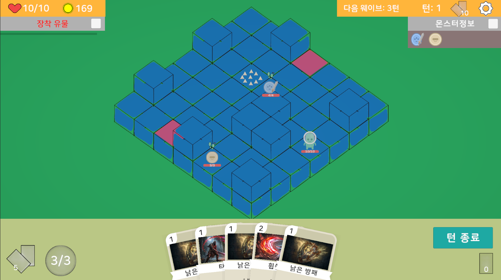
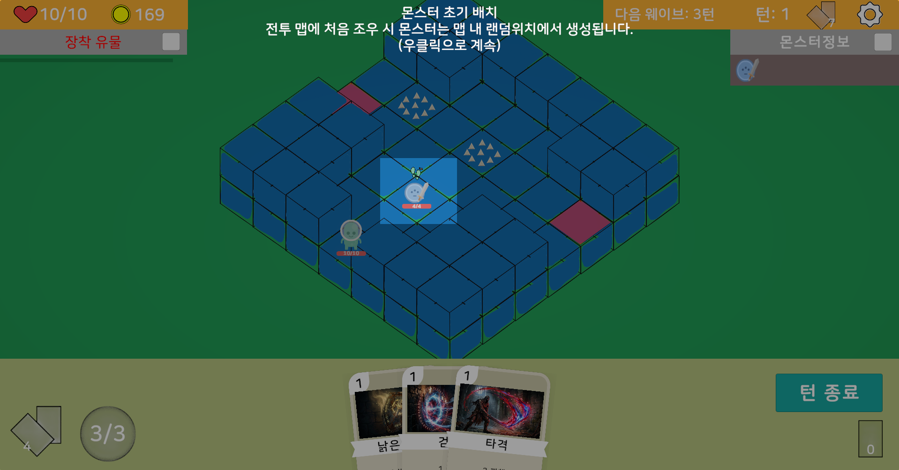

턴제 그리드 카드 덱빌딩 로그라이크 · 3인 팀(클라이언트 프로그래밍 전담) · 모바일협회장상 수상(3학년 1학기)
이 문서는 수상 당시 버전(2026-06-22 마지막 커밋 기준)의 내용입니다.


| 장르 | 턴/그리드, 전략, 덱빌딩 로그라이크 |
|---|---|
| 주요역할 및 담당 | 카드, 몬스터, 플레이어, 그리드/턴을 포함한 모든 시스템 |
| 개발 인원 | 총원 3명 (클라이언트 프로그래밍 1명, 기획 1명, 아트 1명) |
| 개발 환경 | Unity 6, C# |
| 수상 | 모바일협회장상 (3학년 1학기) |
| 링크 | GitHub (수상 당시 코드) · STOVE · 졸업작품 영상 |
강의에서 배운 턴제 기반 행동·반응 시스템 위에 그리드·적 AI·상태효과·맵 생성 등을 덧붙여, 기반 구조를 무너뜨리지 않고 확장했습니다.
카드로 이동·공격·방어를 고르는 턴제 그리드 덱빌딩 로그라이크입니다. 플레이어는 마나(최대 3)를 써서 카드를 사용하고, 7×7 그리드 위에서 적과 전투합니다.
| 강의에서 가져온 것 | 직접 확장한 것 |
|---|---|
|
행동(GameAction)과 반응(Reaction)을 분리하는 구조 PRE 반응 → Performer → POST 반응 실행 흐름 Singleton 기반 System 구성, 턴 구조 |
7×7 그리드 시스템 (위치·점유, BFS 이동 범위) 전략 패턴 기반 적 AI·카드 효과 (적 6종, 카드 31종) 상태효과 8종, 함정·AoE 맵 랜덤 생성, 튜토리얼, 일시정지, BGM GameAction 34종, System 33개 |
강의: Slay The Spire in UNITY (YouTube 시리즈)
문제
카드를 쓰면 공격이 일어나고, 피해가 들어가고, 화상이 걸리고, 적이 죽고, 다음 웨이브가 나옵니다. 이런 연쇄를 시스템끼리 직접 호출하면 기능을 하나 추가할 때마다 여러 시스템을 고쳐야 하고 호출 순서도 꼬입니다. 연출(애니메이션)이 끝난 뒤에 다음 로직이 실행되어야 하는 문제도 있었습니다.
구조
게임에서 일어나는 모든 일을 순수 데이터 객체 GameAction(예: DealDamageGA, MoveGA, EnemyTurnGA)으로 정의하고, ActionSystem 한 곳에서 아래 순서로 처리합니다.
GameAction 발생 → PRE 구독자·리액션 → Performer 실행(코루틴, 연출이 끝날 때까지 대기) → POST 구독자·리액션
각 시스템은 자신이 담당하는 액션의 Performer를 등록하고(AttachPerformer), 관심 있는 다른 액션에는 PRE/POST 리액션을 구독합니다(SubscribeReaction). 등록과 해제는 OnEnable/OnDisable에서 대칭으로 처리합니다. 공통 생명주기는 제네릭 Singleton<T> 하나로 모았고, 이를 상속한 ~System(EnemySystem, TokenSystem, CardSystem, DataSystem, StatusEffectSystem 등)이 도메인별 책임을 나눕니다.
using System;
using System.Collections;
using System.Collections.Generic;
using UnityEngine;
public class ActionSystem : Singleton<ActionSystem>
{
private List<GameAction> reactions = null;
public bool IsPerforming { get; private set; } = false;
private static Dictionary<Type, List<Action<GameAction>>> preSubs = new();
private static Dictionary<Type, List<Action<GameAction>>> postSubs = new();
private static Dictionary<Type, Func<GameAction, IEnumerator>> performers = new();
public void Perform(GameAction action, System.Action OnPerformFinished = null)
{
if (IsPerforming) return;
IsPerforming = true;
StartCoroutine(Flow(action, () =>
{
IsPerforming = false;
OnPerformFinished?.Invoke();
}));
}
public void AddReaction(GameAction gameAction)
{
reactions?.Add(gameAction);
}
private IEnumerator Flow(GameAction action, Action OnFlowFinished = null)
{
reactions = action.PreReactions;
PerformSubscribers(action, preSubs);
yield return PerformReactions();
reactions = action.PerformReactions;
yield return PerformPerformer(action);
yield return PerformReactions();
reactions = action.PostReactions;
PerformSubscribers(action, postSubs);
yield return PerformReactions();
OnFlowFinished?.Invoke();
}
private IEnumerator PerformPerformer(GameAction action)
{
Type type = action.GetType();
if (performers.ContainsKey(type))
{
yield return performers[type](action);
}
}
private void PerformSubscribers(GameAction action, Dictionary<Type, List<Action<GameAction>>> subs)
{
Type type = action.GetType();
if (subs.ContainsKey(type))
{
foreach (var sub in subs[type])
{
sub(action);
}
}
}
private IEnumerator PerformReactions()
{
foreach (var reaction in reactions)
{
yield return Flow(reaction);
}
}
public static void AttachPerformer<T>(Func<T, IEnumerator> performer) where T : GameAction
{
Type type = typeof(T);
IEnumerator wrappedPerformer(GameAction action) => performer((T)action);
if (performers.ContainsKey(type)) performers[type] = wrappedPerformer;
else performers.Add(type, wrappedPerformer);
}
public static void DetachPerformer<T>() where T : GameAction
{
Type type = typeof(T);
if (performers.ContainsKey(type)) performers.Remove(type);
}
public static void SubscribeReaction<T>(Action<T> reaction, ReactionTiming timing) where T : GameAction
{
Dictionary<Type, List<Action<GameAction>>> subs = timing == ReactionTiming.PRE ? preSubs: postSubs;
void wrappedReaction(GameAction action) => reaction((T)action);
if (subs.ContainsKey(typeof(T)))
{
subs[typeof(T)].Add(wrappedReaction);
}
else
{
subs.Add(typeof(T), new());
subs[typeof(T)].Add(wrappedReaction);
}
}
public static void UnsubscribeReaction<T>(Action<T> reaction, ReactionTiming timing) where T : GameAction
{
Dictionary<Type, List<Action<GameAction>>> subs = timing == ReactionTiming.PRE ? preSubs : postSubs;
if (subs.ContainsKey(typeof(T)))
{
void wrappedReaction(GameAction action) => reaction((T)action);
subs[typeof(T)].Remove(wrappedReaction);
}
}
}public abstract class GameAction
{
public List<(GameAction, System.Action)> PreReactions { get; private set; } = new();
public List<(GameAction, System.Action)> PerformReactions { get; private set; } = new();
public List<(GameAction, System.Action)> PostReactions { get; private set; } = new();
}
public abstract class Singleton<T> : MonoBehaviour where T : MonoBehaviour
{
public static T Instance { get; private set; }
protected virtual void Awake()
{
if (Instance != null)
{
cannotInitialize = true;
Destroy(gameObject);
return;
}
Instance = this as T;
}
protected virtual void OnDestroy()
{
Instance = null;
}
}public class HeroSystem : Singleton<HeroSystem>
{
public HeroView HeroView => TokenSystem.Instance.HeroView;
public Vector2Int HeroPosition => TokenSystem.Instance.GetTokenPosition(HeroView);
private void OnEnable()
{
ActionSystem.SubscribeReaction<EnemysTurnGA>(EnemysTurnPreReaction, ReactionTiming.PRE);
ActionSystem.SubscribeReaction<EnemysTurnGA>(EnemysTurnPostReaction, ReactionTiming.POST);
}
private void OnDisable()
{
ActionSystem.UnsubscribeReaction<EnemysTurnGA>(EnemysTurnPreReaction, ReactionTiming.PRE);
ActionSystem.UnsubscribeReaction<EnemysTurnGA>(EnemysTurnPostReaction, ReactionTiming.POST);
}
private void EnemysTurnPreReaction(EnemysTurnGA enemyTurnGA)
{
DiscardAllCardsGA discardAllCardsGA = new();
ActionSystem.Instance.AddReaction(discardAllCardsGA);
// ... 플레이어 상태효과 지속 턴 감소 (이하 생략)
}
}붙인 것
7×7 그리드에서 유닛의 위치·점유를 관리하는 TokenGrid, 이동 가능 영역을 탐색하는 UtilityBFS를 구현했습니다. BFS는 최대 거리 안의 칸을 찾고, 적·영웅·파괴 가능 오브젝트를 통과 불가로 제외하는 옵션을 두었으며, 경로 존재 확인과 최단 경로 탐색 함수도 제공합니다. 공격 범위와 대상은 전략 패턴(GridRangeMode, GridTargetMode)으로 분리했습니다.
기반과 연결한 방식
이동·공격·넉백을 모두 GameAction(MoveGA, PlayerMoveGA, AttackEnemyGA, KnockBackGA)으로 만들어 기존 PRE → Performer → POST 흐름 위에서 처리합니다. 그래서 그리드에 반응하는 기능도 ActionSystem을 수정하지 않고 구독만으로 붙습니다. 가시 함정(SpikeTrap)이 대표적입니다.
// SpikeTrap — 이동 액션의 POST 리액션을 구독하는 것만으로 함정이 동작
ActionSystem.SubscribeReaction<MoveGA>(MoveGAPostReaction, ReactionTiming.POST);public static class UtilityBFS
{
public static List<Vector2Int> FindAllPlaces(Vector2Int start, int maxDistance, bool exceptEnemy, bool exceptHero, bool exceptDestructable = false)
public static List<Vector2Int> FindALLRoots(Vector2Int start, int maxDistance, bool exceptEnemy = false, bool exceptHero = false)
public static bool IsPathExist(int[,] map, Vector2Int start, Vector2Int goal)
public static List<Vector2Int> FindShortestPath(int[,] map, Vector2Int start, Vector2Int goal)
}전체 코드는 UtilityBFS.cs에서 볼 수 있습니다.
문제
적마다 판단 방식, 행동, 공격 범위가 다르고 카드마다 효과 조합이 다릅니다. if/switch 분기나 적마다 서브클래스를 만드는 방식으로 풀면 새 콘텐츠를 넣을 때마다 코드 수정과 재빌드가 필요해집니다.
설계
변하는 부분을 모두 추상 클래스로 분리하고, [SerializeReference]로 ScriptableObject 인스펙터에서 구현체를 골라 끼울 수 있게 했습니다.
규모
카드 31종(공격 인접·공격 투사·기술 디버프·기술 방어·기술 영역·이동, 테스트 카드 제외), 적 6종, 상태효과 8종을 ScriptableObject로 분리했습니다.
문제
함정·폭탄을 추가하면서, 오브젝트가 소멸할 때 자신의 Reaction을 해지하는 기능이 필요해졌습니다. 그러자 ActionSystem이 구독자 목록을 순회하는 도중 목록이 수정되어 오류가 발생했습니다(2026-05-28 1차 수정). 이후에도 일부 구독이 해지되지 않고 남는 문제가 있었습니다(2026-06-02 2차 수정).
원인
Remove가 호출되어 컬렉션이 변경됐습니다.Remove했기 때문에, 등록된 래퍼와 일치하지 않아 제거되지 않았습니다.해결
wrapperMap에 저장해, 해지 시 그 래퍼를 찾아 제거합니다.willRemoveSubs 목록에 보류했다가, 순회가 끝난 뒤 일괄 처리합니다.public static void UnsubscribeReaction<T>(Action<T> reaction, ReactionTiming timing) where T : GameAction
{
Dictionary<Type, List<Action<GameAction>>> subs = timing == ReactionTiming.PRE ? preSubs : postSubs;
if (subs.ContainsKey(typeof(T)))
{
void wrappedReaction(GameAction action) => reaction((T)action);
subs[typeof(T)].Remove(wrappedReaction); // 매번 새 래퍼 → 등록된 것과 다르다
}
}private static readonly Dictionary<Delegate, Action<GameAction>> wrapperMap = new();
private (Type, bool) currentSub; // 현재 순회 중인 (타입, pre 여부)
private List<Action> willRemoveSubs = new List<Action>();
private void PerformSubscribers(GameAction action, Dictionary<Type, List<Action<GameAction>>> subs)
{
currentSub = (action.GetType(), subs == preSubs);
Type type = action.GetType();
if (subs.ContainsKey(type))
{
foreach (var sub in subs[type]) sub(action);
}
currentSub = (null, false);
if (willRemoveSubs.Count > 0) // 순회 종료 후 일괄 처리
{
foreach (var sub in willRemoveSubs) sub.Invoke();
willRemoveSubs.Clear();
}
}
public static void SubscribeReaction<T>(Action<T> reaction, ReactionTiming timing) where T : GameAction
{
// ... (기존 등록 로직)
wrapperMap[reaction] = wrappedReaction; // 원본 → 래퍼 저장
}
public static void UnsubscribeReaction<T>(Action<T> reaction, ReactionTiming timing) where T : GameAction
{
// ... 현재 순회 중인 타입·타이밍이면 willRemoveSubs에 보류 후 return
if (subs.ContainsKey(typeof(T)) && wrapperMap.TryGetValue(reaction, out var wrapped))
{
subs[typeof(T)].Remove(wrapped);
wrapperMap.Remove(reaction);
}
}RandomMapCreator가 맵 테마(MapThemeData)와 청크(ChunkData) 데이터를 조합해 전투 맵을 만듭니다. MatchSetupSystem이 맵 → 웨이브(적 배치) → 영웅 배치 → 덱 세팅 순으로 전투를 시작합니다.TutorialSystem, PauseSystem, SoundSystem을 각각 ~System으로 나눠 구현했습니다.